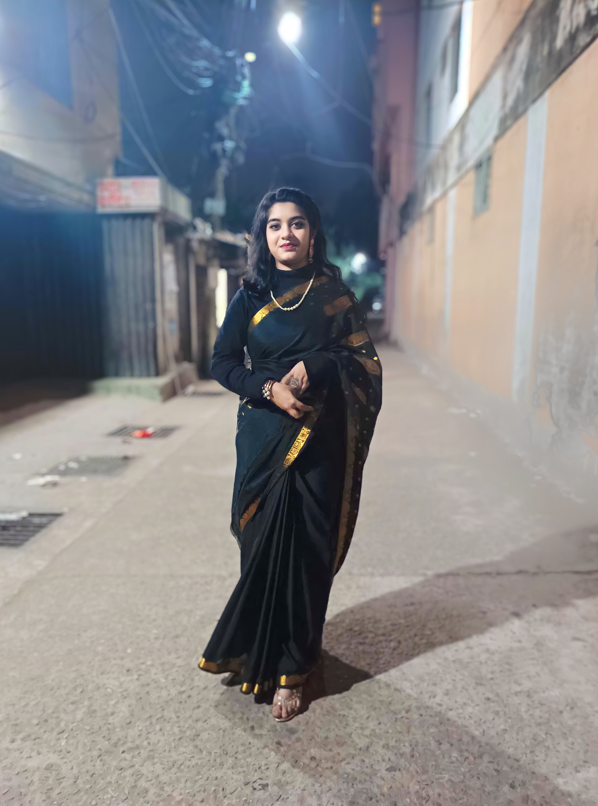

Her Strenght

I specialize in admiring her strength—the quiet resilience that carries her through every challenge and the courage she shows even when the road gets difficult. She faces life with a steady heart and an unbreakable spirit, turning obstacles into lessons and hardships into growth. Through every storm she remains grounded, inspiring everyone around her with determination, patience, and grace. Her strength isn’t just in the battles she wins, but in the way she rises again and again, stronger, wiser, and more beautiful in spirit each time. 💫